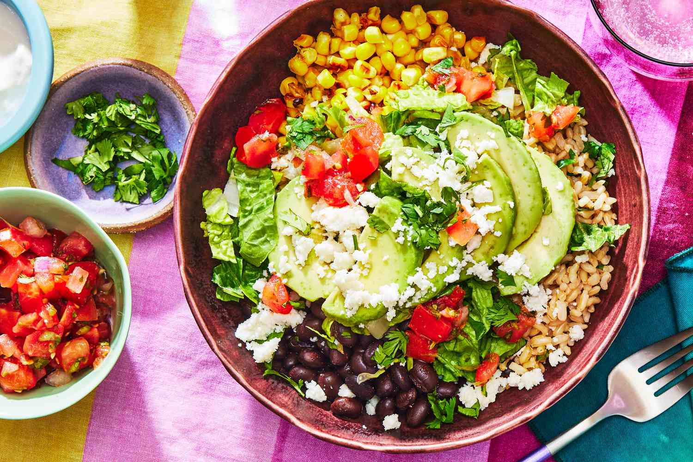

All About Me: Portfolio
I have always been an energetic person, therefore my parents decided to give me friends that can match my energy. Now, I have a pet dog and a cat. Most people can choose between these two animals, but I can't. I love both cats and dogs. I could never pick one over the other. Yes, its tiring having to walk them and take care of every mistake they make around the house, but they are good company and I enjoy every moment with them. I study at Victoria Park Collegiate Institute. I usually like to keep my friend group small during. I don't have much of a loud personality. My bestfriend frequently comes over to my house, to hang-out with me and my pets.

|
I got him when I was 8 years old; I named him Lucky. He was me and my family's first pet. Everyone adored him a lot; whenever my relatives/extended family came, they always played with him. Since he was little, he was always excited and energetic with everyone. He was always by my side, never giving me time to get bored. With his company by my side, I had a feeling of getting another pet for both of us. |

|
I got her when I was 11 years old; I named her Lily. After spending time with Lucky, I wanted another pet so that Lucky can have a friend who can play with him. When Lily was first brought into our home, both pets were distant with each other, but as time went by, they became closer. Its usually said and belived that cats and dogs don't go well with each other, but Lucky and Lily seem to be fine with each other. |
My Favourite Foods:
- Burrito Bowls
- Tacos
- Sushi
- Pizza
- Nepali Dumplings
|  |

|

|
My Favourite Places to Visit:
- Paris, France
- London, England
- New York City, USA
- Barcelona, Spain

|

|

|
|
|
Paris boasts world-renowned museums like the Louvre and Musée d'Orsay, and you can explore the historic Notre-Dame Cathedral and the Palace of Versailles. Paris offers a vibrant atmosphere with charming cafes, bustling markets, and delightful culinary experiences. When I visited Paris, I saw iconic landmarks, ate world-renowned cuisine, experienced luxurious boutiques, and relaxed in beautiful parks and seine river cruises. |
London is a great place to visit due to its rich history, vibrant culture, numerous attractions, and diverse experiences. London is home to famous landmarks like Buckingham Palace, Big Ben (the Houses of Parliament), the Tower of London, St. Paul's Cathedral, and the London Eye. When i visited London, I saw world-class museums and all of London's iconic landmarks. I ate many iconic, michelin stars cuisines, with various international flavors (cuisines from all around the world). |
When I visited New York City, I was amazed by the iconic landmarks, such as the Empire State Building, the Statue of Liberty, and the Brooklyn Bridge. There are also many broardway shows, thriving art scene, and the city has electrifying nightlife. |
Barcelona has stunning architecture, especially the works of Antoni Gaudi. I experieenced many new things, including rich culinary scenes (including Catalan cuisine, tapas and sea food, and food markets), famous and unique nightlife, and beautiful beaches. |